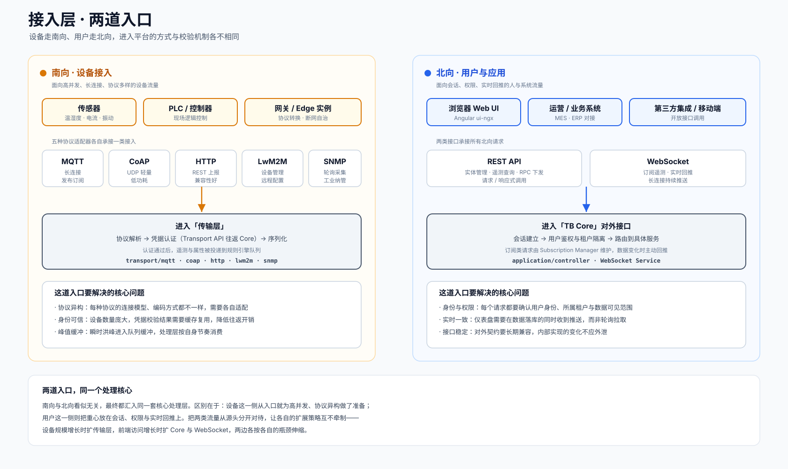

这一层在做什么
把接入层理解成一栋楼的两个门厅会比较直观。一个门厅朝向车间，迎接的是成千上万台设备，它们说着 MQTT、CoAP、HTTP、LwM2M、SNMP 等不同的语言，而且大多希望保持长期在线。另一个门厅朝向办公区，迎接的是运维人员的浏览器、上层的业务系统、以及对接平台的第三方应用，它们更在意能不能登录、看到哪些数据、操作是否被授权。
两个门厅服务于同一栋楼，却配备了完全不同的接待方式。设备这一侧的关注点集中在协议适配与身份校验，请求量大、连接持久；用户这一侧的关注点集中在会话管理与权限控制，并且需要在数据发生变化时主动把结果送达，而非依赖反复轮询。这种从源头分流的安排，让两类流量的扩展策略能够彼此独立。
内部结构
左侧是南向的设备接入路径，右侧是北向的用户与应用路径。两条路径各自完成校验之后，汇入同一套核心处理层。

南向与北向的分工
同一层里的两条路径，承担着不同的职责，也对应着不同的源码模块。
南向 · 设备接入 TB_TRANSPORT
承接来自传感器、控制器、网关、Edge 实例的数据上报与命令应答。五种协议适配器各自处理一类连接模型，把不同格式的设备数据，转换成平台内部统一的遥测、属性与事件。
它要解决的问题集中在三处：协议异构需要逐一适配；设备身份需要可信校验，并且校验结果会缓存复用以降低开销；瞬时洪峰需要借助队列缓冲，避免冲击后端。
transport/mqtt coap http lwm2m snmp北向 · 用户与应用 Core API
承接浏览器、运营系统与第三方集成的访问。REST 接口处理实体管理、遥测查询、命令下发这类请求；WebSocket 维持长连接，在订阅的数据发生变化时把新值主动送到前端。
它要解决的问题同样有三处：每个请求都要确认用户身份、所属租户与可见范围；仪表盘需要在数据落库的同时收到推送；对外接口的契约需要长期保持兼容，内部实现的调整不应外泄给调用方。
application/controller · WebSocket Service · ui-ngx为什么要从入口就分流
设备流量与用户流量的特征几乎相反。设备连接数量极大、单条消息很小、连接长期保持，瓶颈通常落在并发连接与吞吐上；用户访问数量相对有限、单次请求可能携带复杂查询、关注响应时延与权限判定，瓶颈落在计算与一致性上。
如果把两者混在同一道入口处理，扩容时就会互相牵制——设备规模上涨本该只增加传输节点，却可能连带影响到面向用户的接口。把它们从源头分开之后，传输层可以围绕高并发持续横向扩展，Core 与 WebSocket 则按照前端访问量独立伸缩，两条路径各自应对各自的压力点。
一个容易忽略的细节：设备的凭据校验并不在传输层本地完成，而是经由 Transport API 往返一次 Core 来确认身份。为了避免每条消息都付出这次往返的开销，校验结果会被缓存复用。这条机制在传输层里有更完整的展开。
在整条链路中的位置
接入层是数据进入平台的第一站。它的下游，是负责协议适配与转发的传输层。
设备数据从这里进入之后，会沿着传输层、消息总线、核心处理层一路向下，最终落入持久化层；与此同时，处理结果又会通过 WebSocket 回到这一层的北向门厅，呈现在仪表盘上。完整的逐跳过程，可以在总览页的端到端数据流里对照查看。
源码位置
协议适配器
五种传输协议的接入实现，各自独立成模块。
transport/mqtt · coap · http · lwm2m · snmp传输服务骨架
会话管理、认证与转发的公共逻辑。
common/transport/transport-api前端工程
Angular 实现的 Web 控制台，承接北向交互。
ui-ngx